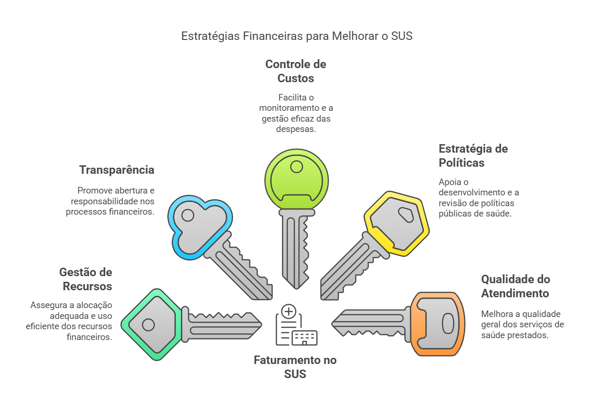
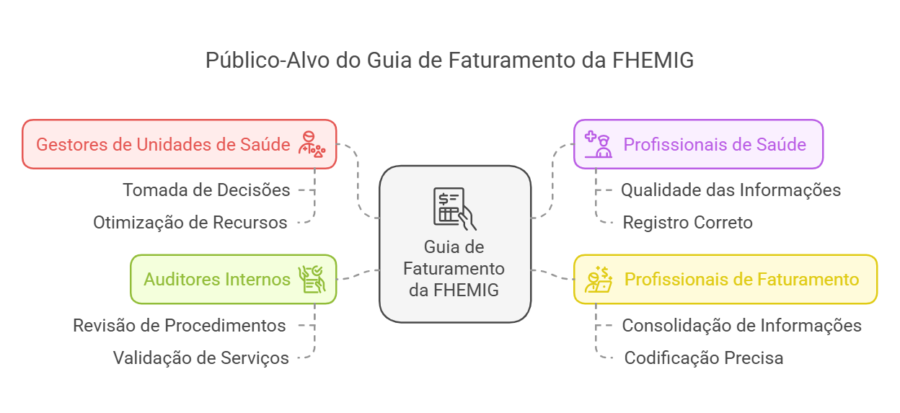
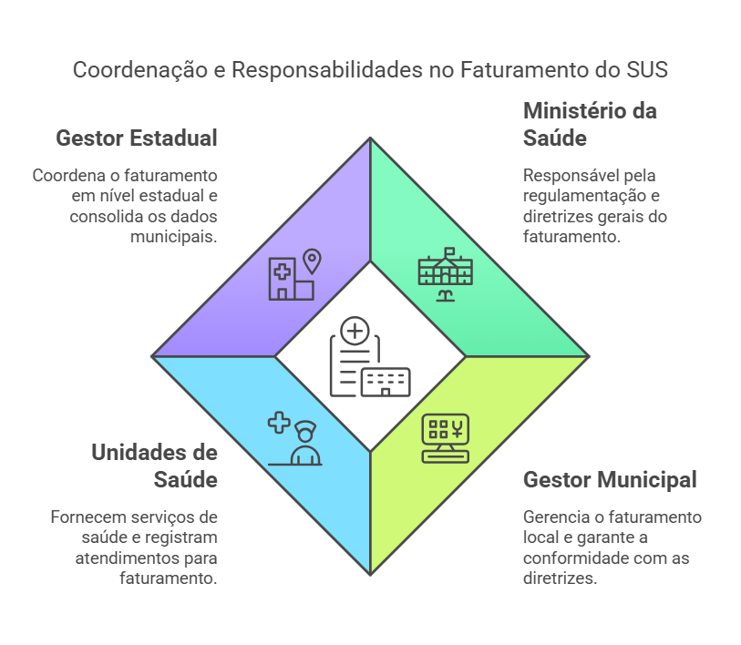
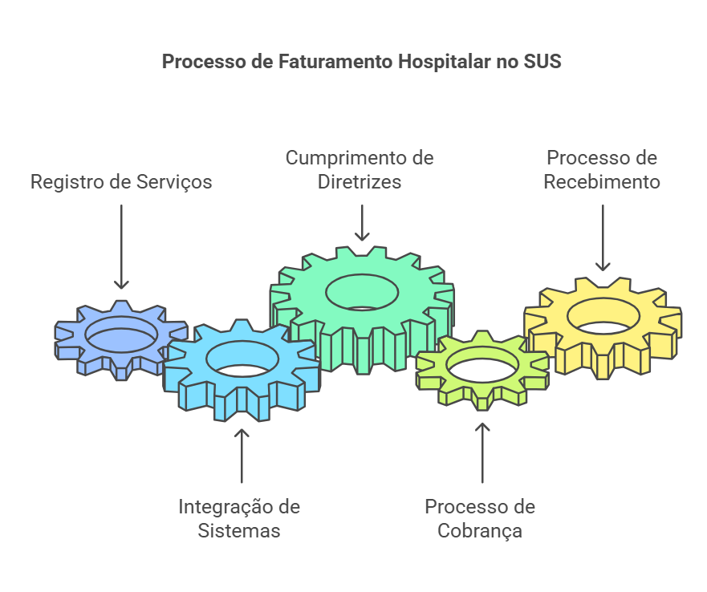
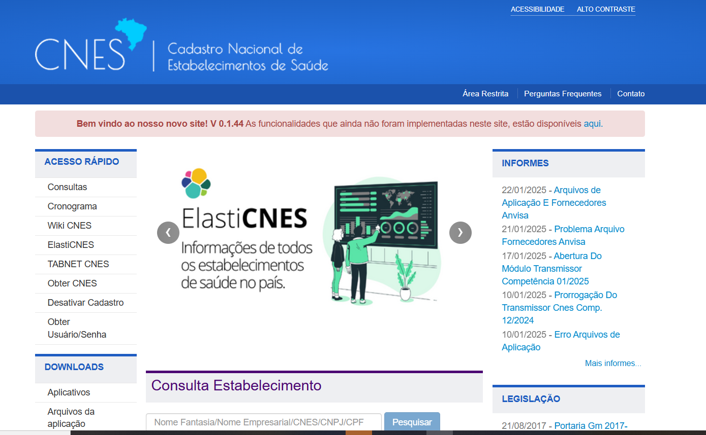
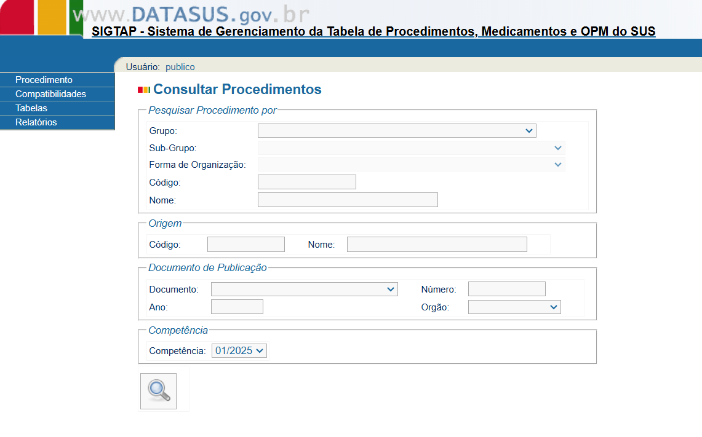

Introdução
A importância do faturamento no Sistema Único de Saúde (SUS)
A importância do faturamento no Sistema Único de Saúde (SUS) não pode ser subestimada. O faturamento é um processo essencial para a gestão eficiente dos serviços de saúde pública, assegurando que os procedimentos realizados sejam devidamente registrados e remunerados. Este processo garante a alocação adequada dos recursos financeiros, promovendo a transparência e contribuindo para a sustentabilidade financeira das unidades de saúde.
Uma gestão de faturamento correta possibilita um controle eficaz dos custos, promovendo não apenas a continuidade dos serviços, mas também a melhoria contínua dos processos assistenciais, auxiliando na formulação e revisão das políticas públicas de saúde. Dessa forma, o faturamento não é apenas uma questão financeira; é uma ferramenta estratégica para a melhoria da qualidade do atendimento prestado à população.

Neste contexto, o Guia de Faturamento Hospitalar da FHEMIG foi desenvolvido para apoiar os gestores e profissionais de saúde da Fundação Hospitalar do Estado de Minas Gerais, fornecendo diretrizes claras sobre o processo de faturamento. Este guia está alinhado às normativas federais e estabelece procedimentos que garantem o correto registro dos serviços prestados, contribuindo para a padronização e eficiência dos processos no âmbito do SUS.
Objetivo deste Guia
Este guia foi desenvolvido para padronizar os processos de faturamento hospitalar na FHEMIG, garantindo maior eficiência, transparência e conformidade com as normativas do SUS.
Objetivos do Guia
Os principais objetivos do Guia de Faturamento da FHEMIG são:
- Padronizar o processo de faturamento na FHEMIG, implementando normas e definindo processos que assegurem o registro adequado dos serviços prestados pelas unidades de saúde.
- Prevenir erros e fraudes: Estabelecer diretrizes que promovam a transparência e a precisão das informações, prevenindo duplicidades de cobranças e registros incorretos.
- Assegurar a remuneração adequada dos serviços: Garantir que os serviços prestados pelas unidades e profissionais de saúde sejam remunerados corretamente, em conformidade com as tabelas do SUS e as normativas vigentes.
- Facilitar o controle e a auditoria: Fornecer meios para que órgãos de controle e auditoria acompanhem e verifiquem a utilização eficiente dos recursos públicos.
- Apoiar a tomada de decisões dos gestores: Utilizar as informações geradas pelo faturamento para subsidiar decisões estratégicas e aprimorar a alocação de recursos e a gestão assistencial.
Público-Alvo

Este Guia é destinado a:
a) Gestores de unidades de saúde da FHEMIG: A tomada de decisões eficiente é uma das principais razões para envolver os gestores no processo de faturamento. Sendo responsáveis pela administração e operação das unidades de saúde, eles precisam compreender detalhadamente o funcionamento do faturamento do SUS. Esse conhecimento permite que tomem decisões mais assertivas e estratégicas, otimizando os recursos financeiros e promovendo a sustentabilidade econômica da instituição.
b) Profissionais de saúde envolvidos no processo assistencial: Os profissionais de saúde impactam diretamente na qualidade dos serviços prestados e na eficiência da gestão hospitalar. Quando esses profissionais têm conhecimento dos requisitos do faturamento do SUS, eles podem aprimorar a qualidade das informações, assegurando que todos os procedimentos e insumos utilizados sejam registrados corretamente, evitando a perda de faturamento devido a informações incompletas ou incorretas, e contribuindo para uma melhor utilização dos recursos humanos e financeiros.
c) Profissionais envolvidos no processo de faturamento: Como responsáveis pela consolidação das informações referentes aos procedimentos realizados e pelo correto faturamento junto ao gestor, os profissionais de faturamento desempenham um papel crucial na sustentabilidade financeira da FHEMIG. É essencial que esses profissionais sejam capacitados com orientações claras sobre os requisitos de faturamento, a documentação necessária, a codificação precisa dos procedimentos e o registro detalhado dos insumos utilizados.
d) Auditores internos: Os auditores internos são responsáveis por revisar, monitorar e validar os procedimentos médicos e serviços prestados, garantindo que cada etapa do atendimento esteja registrada de forma fidedigna e de acordo com os códigos e normas de faturamento estabelecidas pelo SUS. Assim, o Guia de Faturamento da FHEMIG é uma ferramenta que poderá contribuir para a ampliação do conhecimento acerca da legislação e das normas regulatórias aplicáveis ao SUS, oferecendo um arcabouço que auxiliará na identificação de possíveis inconformidades nos processos, evitando cobranças indevidas ou omissões que possam impactar negativamente o faturamento.
Principais Atores Envolvidos

Fundamentos do Faturamento
Fundamentos
Os fundamentos do faturamento hospitalar no SUS são os alicerces que garantem que todo o processo de registro, cobrança e recebimento dos serviços prestados seja realizado de forma adequada e eficiente. Esses fundamentos envolvem um conjunto de sistemas, cadastros e processos que trabalham de forma integrada para assegurar que cada procedimento realizado seja devidamente registrado e remunerado conforme as normas e diretrizes estabelecidas pelo Ministério da Saúde.

Nesta seção, abordaremos os principais componentes que constituem os fundamentos do faturamento no SUS. Cada um desses componentes tem um papel crucial no registro e na cobrança dos serviços de saúde, e sua compreensão é essencial para garantir a eficiência do processo de faturamento. Os principais componentes que iremos abordar nas subseções seguintes são:
- CNES (Cadastro Nacional de Estabelecimentos de Saúde): Responsável pelo registro dos estabelecimentos de saúde e seus serviços.
- CNS (Cartão Nacional de Saúde): Utilizado para identificar de forma única os usuários do SUS.
- SIGTAP (Sistema de Gerenciamento da Tabela de Procedimentos, Medicamentos e OPM do SUS): Ferramenta essencial para a codificação e valoração dos procedimentos realizados.
- SIA/SUS (Sistema de Informação Ambulatorial): Sistema responsável pelo registro e processamento dos procedimentos ambulatoriais realizados, garantindo o controle e o faturamento adequado desses serviços.
- BPA (Boletim de Produção Ambulatorial): Utilizado para registrar e faturar os procedimentos ambulatoriais.
- APAC (Autorização de Procedimentos de Alta Complexidade): Autoriza e registra os procedimentos de alta complexidade.
- AIH (Autorização de Internação Hospitalar): Documento essencial para o registro e faturamento das internações hospitalares.
Cada um desses elementos será detalhado nas subseções seguintes, com o objetivo de fornecer uma visão clara e prática de como eles se integram ao processo de faturamento da FHEMIG e do SUS.
Cadastro Nacional de Estabelecimentos de Saúde (CNES)
O Cadastro Nacional de Estabelecimentos de Saúde (CNES) é o sistema que mapeia a capacidade instalada do Sistema Único de Saúde (SUS). Ele coleta dados sobre a estrutura e os profissionais de saúde nos estados e municípios, auxiliando os gestores no planejamento das ações de saúde.

O CNES é destinado a toda a população brasileira e envolve os seguintes atores e papéis:
| Atores | Papel |
|---|---|
| Estabelecimentos de Saúde | Registram todos os seus dados, SUS ou não SUS, por meio da aplicação disponibilizada pelo Ministério da Saúde e os enviam periodicamente. |
| Secretarias de Saúde | Acessam os estabelecimentos de saúde do seu território por meio do CNES e são responsáveis pela manutenção dos dados dos estabelecimentos sob a gestão de cada ente federado. |
| Ministério da Saúde | Acessa todos os estabelecimentos de saúde do país no CNES, além de monitorar indicadores de envio de dados por estados, municípios e regiões de saúde. |
| Cidadãos | Podem consultar os estabelecimentos de saúde através da consulta pública no site do CNES, visualizando os dados públicos por meio de ferramentas como Tabwin e Tabnet. |
O CNES coleta as seguintes informações principais:
- Dados gerais básicos
- Endereço e localização
- Gestor responsável (como secretarias de saúde)
- Tipos de atendimento (internações, ambulatórios, etc.)
- Características do estabelecimento (tipo, categoria, tributos, etc.)
- Equipamentos disponíveis (como RX, tomógrafo, ultrassom, etc.)
- Serviços de apoio (como serviços sociais e lavanderias)
- Especialidades médicas (como cardiologia e farmácia)
- Estruturas físicas (número de leitos, salas, etc.)
- Profissionais que atuam (no SUS e fora dele)
- Equipes de saúde (como as de saúde da família)
- Cooperativas
O cadastro no CNES serve como base para diversos sistemas, incluindo:
- Sistema de Informação Ambulatorial (SIA/SUS)
- Sistema de Informação Hospitalar (SIH/SUS)
- Cartão Nacional de Saúde (CNS)
- Sistema de Informação de Regulação
- Sistema de Informação da Programação Pactuada e Integrada
- Sistema de Informações da Anvisa
- Sistema de Informações da ANS
- Gerenciador de Informações Locais (GIL)
Importância do CNES
É de suma importância que os estabelecimentos de saúde mantenham seus dados no CNES atualizados para que os sistemas tenham conhecimento da capacidade instalada do local, incluindo estrutura física, habilitações e profissionais e suas especialidades. A falta de registro no CNES da capacidade do estabelecimento pode resultar em glosas e bloqueios da AIH (Autorização de Internação Hospitalar).
Atualização obrigatória
Os artigos 371 e 372 da Portaria de Consolidação nº 01/GM/MS/2017 estabelecem que a atualização do cadastro de estabelecimentos de saúde deve ocorrer em meio eletrônico, no mínimo mensalmente, ou sempre que houver alterações nas informações. O CNES permite a atualização diária da base nacional, possibilitando o envio de arquivos da base local para a Base de Dados Nacional do CNES sempre que houver necessidade.
Mesmo quando os dados cadastrais de um estabelecimento de saúde permanecem inalterados em uma competência, recomenda-se o envio mensal. Esse envio será reconhecido como certidão negativa e atualizará a data da última atualização nacional. As datas de envio e encerramento de cada competência podem ser consultadas no cronograma disponível no Portal CNES, no menu Acesso Rápido/Cronograma.
Cartão Nacional de Saúde (CNS)
O Cartão Nacional de Saúde (CNS) é o documento que identifica o usuário do SUS. Ele contém informações como nome, data de nascimento, telefone, endereço, CPF, RG, entre outros. O número do CNS funciona como uma chave de integração dos sistemas de saúde que precisam identificar pessoas, como pacientes, operadores ou profissionais de saúde. Isso possibilita a criação de um histórico de atendimentos de cada pessoa no SUS, permitindo o acesso a dados de sistemas como o de atenção básica, hospitalar e de dispensação de medicamentos, por exemplo.
Os principais benefícios do CNS incluem:
- Identificação rápida do usuário
- Acesso ao prontuário pelo número do cartão
- Conexão entre profissional, paciente, hospital e atendimento
- Registro dos atendimentos, consultas e exames realizados
- Controle de medicamentos dispensados
- Atualização de dados cadastrais
O CNS faz parte da política de e-Saúde do Ministério da Saúde, que visa organizar e integrar informações sobre pessoas, serviços de saúde e procedimentos. Isso facilita a gestão do SUS e o atendimento ao cidadão, além de ajudar os gestores e profissionais da saúde a realizarem um trabalho mais qualificado.
A partir do cadastramento do usuário e da emissão do CNS, com a integração dos sistemas por meio do número do cartão, torna-se possível identificar o usuário em todos os seus contatos com o SUS e acompanhar sua evolução dentro do sistema, com efeitos positivos tanto na atenção individual quanto no planejamento das ações de saúde.
Obrigatoriedade do CNS
Conforme a Portaria Conjunta nº 2, de 15 de março de 2012 do Ministério da Saúde, o preenchimento do número do CNS do usuário é obrigatório para o registro dos procedimentos ambulatoriais e hospitalares nos instrumentos de registro das ações de saúde do Ministério da Saúde. O registro do número do CNS deve ser providenciado no ato da admissão do paciente.
Caso o usuário das ações e serviços de saúde não possua cadastro na Base Nacional de Dados dos Usuários das Ações e Serviços de Saúde, o estabelecimento de saúde deve realizar o cadastro por meio do aplicativo disponibilizado pelo DATASUS na internet.
O preenchimento do número do CNS é opcional nos instrumentos de registro das ações de saúde nos seguintes casos:
- Para ações de saúde realizadas em doadores falecidos, conforme a Lei 9.434, de 04 de fevereiro de 2007.
- Quando não for possível informar o número do CNS do paciente em atendimentos de urgência, acidentes no local de trabalho, acidentes no trajeto para o trabalho, outros tipos de acidentes de trânsito ou outras lesões e envenenamentos, conforme descrito na referida portaria.
O estabelecimento e o gestor de saúde devem apresentar justificativa escrita nos instrumentos de registro, descrevendo a razão da falta da informação do número do CNS na ação de saúde. As ações de saúde apresentadas sem o número do CNS estarão bloqueadas nos sistemas de informação e somente serão desbloqueadas mediante o aceite das justificativas pelas instâncias superiores.
É também obrigatória a inclusão do número do CNS do profissional solicitante, executante e/ou autorizador das ações de saúde nos instrumentos de registro, como:
- Autorizações de Internação Hospitalar (AIH)
- Autorizações de Procedimentos Ambulatoriais (APAC)
- Boletim de Produção Ambulatorial Individualizada (BPA I)
Sistema de Gerenciamento da Tabela de Procedimentos, Medicamentos,Órteses, Próteses e Materiais Especiais do SUS (SIGTAP)

O Sistema de Gerenciamento da Tabela de Procedimentos, Medicamentos, Órteses, Próteses e Materiais Especiais do SUS é definido pela sigla SIGTAP. Trata-se de um ambiente virtual que permite a consulta da Tabela de Procedimentos, Medicamentos, Órteses/Próteses e Materiais Especiais (OPM) do SUS. O sistema é gerenciado pela Coordenação Geral de Sistemas de Informação (CGSI/DRAC/SAS/MS), que disponibiliza a tabela de procedimentos do SUS, com todos os seus atributos, aos estabelecimentos de saúde credenciados ao SUS.
A instituição da Tabela de Procedimentos, Medicamentos, Órteses/Próteses e Materiais Especiais no SIGTAP foi feita pela Portaria GM nº 321 de fevereiro de 2007, e publicada pela Portaria GM nº 2848 de novembro de 2007. A legislação que regula o sistema de gestão da Tabela de Procedimentos do SUS é regida pela Portaria de Consolidação nº 1, de 28 de setembro de 2017.
Este instrumento de gestão possibilita acesso à Tabela de Procedimentos do SUS e o acompanhamento das alterações realizadas a cada competência, com detalhamento das características dos procedimentos, compatibilidades e relacionamentos.
O SIGTAP permite conhecer todas as características de um procedimento, como:
- Tipo de financiamento
- Instrumento de registro
- Valor
- Classificação Brasileira de Ocupações (CBO)
- Classificação Internacional de Doenças (CID)
- Serviço/classificação
- Habilitações
- Incrementos financeiros
- Complexidade
Além disso, o SIGTAP possibilita a extração de diversos relatórios, como o de relacionamento e o de compatibilidade entre procedimentos, que norteiam as ações do faturamento da conta hospitalar, indicando as principais alterações realizadas na Tabela de Procedimentos e os documentos que as originaram.
Portanto, o SIGTAP é uma ferramenta essencial para a gestão do faturamento do SUS, fornecendo todas as informações necessárias ao processo de faturamento e sendo indispensável para a auditoria em saúde.
Sistema de Informação Ambulatorial (SIA/SUS)
O Sistema de Informação Ambulatorial (SIA) surgiu da necessidade do Ministério da Saúde de criar um sistema de informação que permitisse o registro padronizado dos atendimentos ambulatoriais em nível nacional. O objetivo principal era gerar informações que facilitassem o planejamento, controle, avaliação e auditoria dos serviços prestados, principalmente com a descentralização da gestão do Sistema Único de Saúde (SUS).
O SIA foi implantado em 1995 em todo o território nacional. Inicialmente, entrou em funcionamento com o Boletim de Produção Ambulatorial Consolidado (BPA-C), que registrava apenas o procedimento realizado e a quantidade, sem a identificação do paciente.
Em 1996, foi instituída a Autorização de Procedimentos Ambulatoriais de Alta Complexidade/Custo (APAC). Esse novo instrumento do SIA foi criado para contemplar os procedimentos ambulatoriais de alta complexidade/custo, incluindo informações detalhadas como:
- Identificação do usuário atendido;
- Identificação do profissional executante;
- Diagnóstico do paciente.
Unificação tabelas SIH e SIA
Com a instituição da Tabela de Procedimentos, Medicamentos, Órteses/Próteses e Materiais Especiais (OPM) do SUS, pela Portaria GM/MS nº 321, de 8 de fevereiro de 2007, as tabelas de procedimentos do SIA e do SIH foram unificadas.
O SIA é o sistema responsável por gerir informações ambulatoriais do SUS e subsidiar os gestores estaduais e municipais nos processos de:
- Planejamento;
- Programação;
- Regulação;
- Avaliação;
- Controle;
- Auditoria dos serviços de saúde.
As principais finalidades do SIA incluem:
- Registrar os atendimentos ambulatoriais do SUS de forma padronizada;
- Gerar dados e informações estratégicas para a gestão da saúde;
- Auxiliar no planejamento, controle, avaliação e auditoria;
- Viabilizar o faturamento ambulatorial dos serviços prestados.
O SIA permite o processamento das informações de atendimentos registrados nos aplicativos de captação utilizados pelos prestadores públicos e privados contratados/conveniados pelo SUS:
Componentes do SIA/SUS
Os componentes do sistema envolvem sistemas de base, aplicativos de captação, aplicativos intermediários e tabelas:
- Sistemas de Base:
- Cadastro Nacional dos Estabelecimentos de Saúde (CNES);
-
Sistema de Gerenciamento da Tabela de Procedimentos do SUS (SIGTAP).
-
Aplicativos de Captação:
- Boletim de Produção Ambulatorial (BPA):
- BPA-C (Consolidado): Registra apenas a quantidade de procedimentos, sem identificação do paciente.
- BPA-I (Individualizado): Registra informações detalhadas, incluindo a identificação do paciente.
- Autorização de Procedimentos Ambulatoriais (APAC):
- Utilizada para registrar procedimentos de alta complexidade (AC) e alguns de média complexidade (MC), que exigem autorização prévia do gestor local.
-
Registro de Ações Ambulatoriais de Saúde (RAAS):
- Utilizado para registrar procedimentos de atenção psicossocial, financiados por meio de incentivos da Rede de Atenção Psicossocial (RAPS).
-
Aplicativos Intermediários:
- Ficha de Programação Orçamentária (FPO):
- Permite o registro da programação física-orçamentária dos estabelecimentos de saúde, coerente com o planejamento anual e contratos SUS.
-
Transmissor:
- Facilita o envio dos arquivos do banco de dados local para o Banco de Dados Nacional, garantindo a integração das informações.
-
Tabelas:
- Banco de Dados do Sistema de Informação Ambulatorial (BDSIA):
- Contém todos os procedimentos, atributos e regras vigentes na competência de processamento, conforme definidos no SIGTAP.
- Disponibilizado mensalmente para download no portal do SIA, garantindo a atualização dos sistemas.
O SIA/SUS é, portanto, um instrumento essencial para a gestão da produção ambulatorial do SUS, contribuindo para a melhoria da qualidade das informações e para a otimização dos processos de planejamento e controle dos serviços de saúde.
Boletim de Produção Ambulatorial (BPA)
O Boletim de Produção Ambulatorial (BPA) é um instrumento utilizado para registrar os atendimentos ambulatoriais que não exigem autorização prévia do gestor. O registro pode ser feito de duas formas:
| Tipo de BPA | Descrição |
|---|---|
| BPA-C (Consolidado) | Não especifica o paciente atendido, registrando apenas a quantidade de procedimentos realizados. |
| BPA-I (Individualizado) | Identifica o paciente atendido e inclui informações detalhadas sobre os procedimentos realizados. |
A Tabela de Procedimentos, Órteses, Próteses e Materiais Especiais do SUS define qual tipo de registro deve ser utilizado para cada procedimento.
BPA-C e BPA-I
É importante destacar que todos os procedimentos registrados no BPA-C também podem ser registrados no BPA-I. Recomenda-se que as unidades de saúde utilizem preferencialmente o BPA-I, pois ele garante maior qualidade das informações e permite a identificação individualizada dos atendimentos.
Substituição pelo CMD
O BPA será gradualmente substituído pelo Conjunto Mínimo de Dados da Atenção à Saúde (CMD), um sistema no qual todos os atendimentos precisarão ser registrados individualmente. A implantação do CMD será incremental e substituirá um total de nove sistemas de informação atualmente utilizados, que são:
- Boletim de Produção Ambulatorial (BPA);
- Autorização de Procedimento Ambulatorial (APAC);
- Registro das Ações Ambulatoriais de Saúde (RAAS);
- Autorização de Internação Hospitalar (SISAIH01);
- Coleta da Comunicação de Informação Hospitalar e Ambulatorial (CIHA01);
- Sistema de Informação Ambulatorial (SIA);
- Sistema de Informação Hospitalar (SIH);
- Processamento da Comunicação de Informação Hospitalar e Ambulatorial (CIHA02);
- Sistema de Regulação, Controle e Avaliação (SISRCA).
O processo de substituição visa a unificação e individualização dos registros, promovendo maior precisão e qualidade das informações no SUS.
Sistema de Informação Hospitalar - SIH/SUS
O Sistema de Informação Hospitalar (SIH/SUS) teve suas origens em 1979, quando o INAMPS e a DATAPREV desenvolveram o Sistema de Assistência Médico-Hospitalar da Previdência Social/Autorização de Internação Hospitalar (SAMHPS/AIH). A principal inovação foi a substituição do pagamento por item da antiga Guia de Internação Hospitalar (GIH) por um pagamento por pacote, via Autorização de Internação Hospitalar (AIH). Essa mudança trouxe previsibilidade ao faturamento hospitalar e aos gastos públicos.
SIH
Com a descentralização das unidades do INAMPS para as Secretarias Estaduais de Saúde e a inclusão de diferentes prestadores de serviços hospitalares, o sistema passou a ser denominado Sistema de Informação Hospitalar (SIH) do SUS, mantendo a AIH como o instrumento central.
A Autorização de Internação Hospitalar (AIH)
A AIH é utilizada para registrar todos os atendimentos hospitalares no SUS. Ela propõe um pagamento fixo pelos procedimentos médico-hospitalares e inclui:
- Materiais utilizados;
- Procedimentos realizados;
- Profissionais envolvidos;
- Estrutura hospitalar necessária.
Funcionalidades do SIH/SUS
Inicialmente estruturado com uma perspectiva contábil, o SIH expandiu seu uso ao fornecer dados valiosos sobre:
- Diagnósticos;
- Demografia;
- Localização geográfica;
- Consumo de recursos em cada internação hospitalar.
Importância da AIH
Atualmente, o SIH/SUS registra mais de 10 milhões de AIHs aprovadas anualmente. Além de ser essencial para o processamento das internações hospitalares, é uma fonte importante de informações para:
- Perfil epidemiológico da população brasileira;
- Avaliação da qualidade da atenção à saúde no país.
Qualidade das Informações no SIH
A qualidade das informações geradas pelo SIH é influenciada pelas normatizações da assistência hospitalar e pelas políticas públicas de saúde do SUS, que regulam o sistema e impactam as práticas hospitalares.
- Desde a sua criação, diversas melhorias foram implementadas para garantir a qualidade das informações.
- A exigência do Cartão Nacional de Saúde (CNS) na AIH permite a identificação única dos usuários, garantindo maior precisão nos registros.
Fonte de informações
Apesar de algumas fragilidades persistentes, o SIH/SUS tem sido amplamente utilizado para avaliar a morbimortalidade hospitalar, contribuindo para a avaliação epidemiológica e para a formulação de políticas de saúde pública.
Finalidades do SIH/SUS
As principais finalidades do Sistema de Informação Hospitalar (SIH) incluem:
- Registrar os atendimentos aos pacientes internados nos estabelecimentos de saúde do SUS;
- Disponibilizar relatórios para os gestores, com informações direcionadas aos setores de contas e custos hospitalares;
- Fornecer conhecimento sobre aspectos clínicos e epidemiológicos das internações hospitalares realizadas no SUS;
- Viabilizar o faturamento das internações hospitalares no SUS.
O SIH/SUS é, portanto, uma ferramenta essencial para a gestão da saúde pública no Brasil. Embora tenha surgido com a finalidade de controle financeiro, tornou-se um instrumento fundamental para o registro e monitoramento das internações hospitalares, fornecendo informações valiosas para análises epidemiológicas e para a avaliação da qualidade da atenção à saúde no Sistema Único de Saúde.